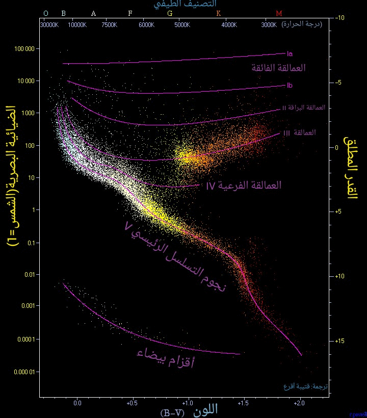

مخطط هرتسبرنغ-راسل
يعتبر مخطط هرتسبرنغ-راسل من أشهر المخططات في علم الفلك. يرسم هذا المخطط العلاقة ما بين الضيائية ( القدر المطلق) و لون النجم الذي يتدرج من نجوم ذات درجة حرارة عالية و لون أبيض مائل للأزرق على يسار المخطط إلى نجوم منخفضة درجة الحرارة و حمراء إلى يمين المخطط.
أدناه مخطط يحدد 22000 نجما من مصنف هيباركوس النجمي بالإضافة إلى 1000 نجم منخفضة الضيائية (أقزام حمراء و بيضاء)
من مصنف غلايس للنجوم القريبة Gliese Catalogue of Nearby
Stars. النجوم القزمة و العادية و التي تحرق الهيدروجين مثل الشمس نجدها موجودة على شريط ممتد من اليسار العلوي إلى اليمين السفلي للمخطط و تدعى بنجوم التسلسل الرئيسي . للنجوم العملاقة بقعتها الخاصة في اليمين العلوي من المخطط. و أعلى منها نجد النجوم النادرة من نوعها و التي هي عمالقة براقة و عمالقة فائقة.. و نزولا إلى أسفل اليسار نجد شريطا يمثل النجوم الأقزام البيضاء و هي بقايا أنوية نجوم ميتة مسنة و التي لا تمتلك طاقة داخلية كافية داخل لبها لبدء تفاعلات نووية و عبر بلايين السنين تبرد متجهة للأسفل و إلى اليمين من المخطط.

الأصناف الضيائية للنجوم
تصنف النجوم بحسب ضيائيتها إلى خمسة أصناف رئيسية و هي كالتالي :
- I العمالقة الفائقة
- و هي نجوم كبيرة جدا و براقة في نهاية حياتها. و تقسم إلى صنفين هما Ia و
Ib, يمثل الصنف Ia النجوم الألمع بين هذين النوعين من التصنيف. و هي نادرة جدا فبين كل مليون نجم يوجد نجم عملاق فائق .
من النجوم العمالقة الفائقة القريبة نذكر نجم سهيل
Canopus (F0Ib) و يبعد عنا 310 سنة ضوئية . و من الأمثلة الأخرى نذكر نجم منكب الجوزاء Betelgeuse (M2Ib), نجم قلب العقرب Antares (M1Ib) و رجل الجبار Rigel (B8Ia).
- II العمالقة البراقة
- و هي نجوم تمتلك ضيائية وسطية ما بين النجوم العمالقة و العمالقة الفائقة. نذكر منها كمثال : نجم سارغاس Sargas (F1II) و نجم الفرد Alphard (K3II).
- III العمالقة العادية
- وهي بشكل رئيسي من النجوم المنخفضة الكتلة في مرحلة نهاية حياتها بحيث تضخمت لتصبح نجوما عمالقة. يتضمن هذا الصنف أيضا نجوما ذات كتل كبيرة في طريقها التطوري لتصبح نجوما عمالقة فائقة . و من الأمثلة على هذا النوع نذكر السماك الرامح Arcturus (K2III) , الحضار
Hadar (B1III) و الدبران Aldebaran (K5III).
- IV العمالقة الفرعية
- وهي نجوم بدأت للتو تتحول إلى نجوم عمالقة أو عمالقة فائقة . و من الأمثلة على ذلك نجم النير Alnair (B7IV) و نجم المفرد Muphrid (G0IV). يذكر بأن نجم الشعرى الشامية Procyon يدخل تحت هذا الصنف و هو بذلك يصنف : F5IV-V.
- V الأقزام
- تندرج تحت هذه الفئة جميع النجوم العادية و التي ما زالت في مرحلة حرق الهيدزوجين حيث تمضي معظم حياتها في هذه المرحلة قبل تطورها إلى مراحل أعلى في المخطط.
تعتبر نجوم الصنفين O و B من هذه الفئة و هي ذات ضيائية و لمعان عالي و بشكل عام تكون أكثر لمعانا من أغلب النجوم العمالقة.
من الأمثلة على هذه الفئة من النجوم الشمس
Sun (G2V) و نجم الشعرى اليمانية Sirius (A1V) , و نجم النسر الواقع Vega (A0V).